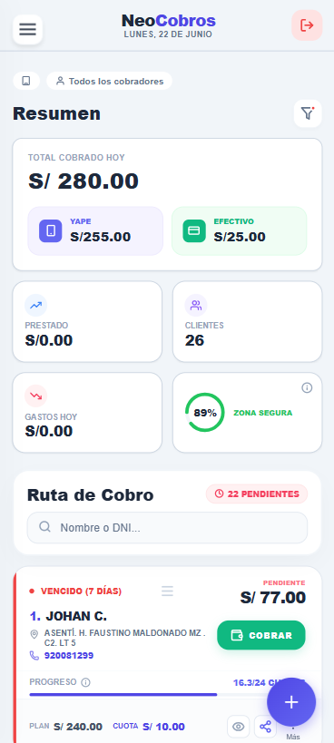
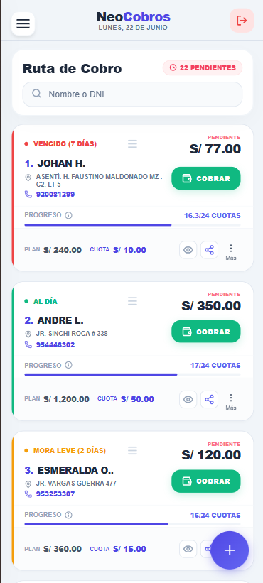
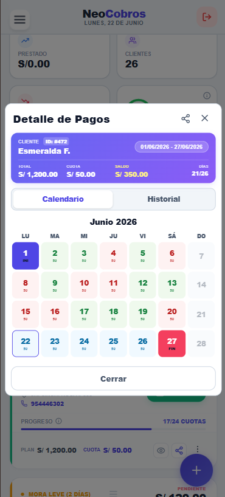
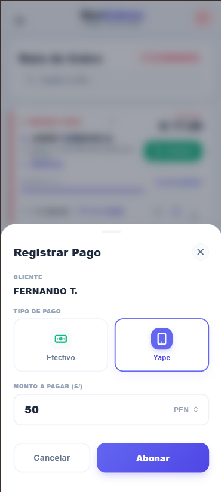

La solución inteligente para prestamistas independientes y equipos de cobro. Planifica tus rutas, realiza abonos instantáneos y analiza tu rentabilidad en tiempo real.

Explora las herramientas que optimizan el día a día de tus cobradores y consolidan tu contabilidad administrativa en tiempo real.
El sistema ordena automáticamente la lista de clientes pendientes en una secuencia lógica según su ubicación, minimizando las paradas innecesarias y reduciendo drásticamente los gastos de transporte.

Olvídate de imprimir costosas y frágiles fichas de cartón. Genera el calendario de cuotas y el historial de pagos digitalmente, y envíaselo a tus clientes por WhatsApp con un solo clic. Un control ecológico, seguro y moderno.

Los cobradores pueden declarar al instante cualquier egreso de caja realizado durante el día (combustible, almuerzos, reparaciones de la motocicleta). Esto mantiene sincronizado el saldo neto diario.
Accede a filtros administrativos inteligentes que te permiten conocer el rendimiento de cada cobrador asignado. Analiza los montos cobrados en rangos de fechas específicos para planificar tu contabilidad.

Al terminar su recorrido, el cobrador envía su resumen consolidado con un solo clic. El administrador recibe el balance de lo cobrado en efectivo, billeteras digitales (Yape) y egresos declarados.
Toma decisiones de crédito rápidas gracias al sistema semáforo que clasifica los préstamos por colores. Identifica de inmediato a clientes en mora leve o atrasados para priorizar las alertas.
Explora las pantallas reales de la plataforma. Una interfaz intuitiva, moderna y optimizada para el uso diario en movilidad.
¿Tienes dudas sobre cómo funciona NeoCobros? Aquí respondemos las dudas más comunes de nuestros usuarios.
NeoCobros es una PWA (Progressive Web App). Para instalarla, abre la plataforma en el navegador de tu celular (como Chrome en Android o Safari en iPhone), presiona el menú de opciones y selecciona "Agregar a la pantalla de inicio" o "Instalar aplicación". Tendrás un icono de acceso directo en tu móvil funcionando como una app nativa.
Absolutamente. Todos los datos son almacenados en bases de datos cifradas y las contraseñas utilizan encriptación de hash robusta. Cada cobrador tiene acceso exclusivamente a su ruta asignada, mientras que el administrador cuenta con el control total de la configuración general e informes.
La plataforma cuenta con un organizador interactivo de rutas de cobro donde los administradores o cobradores pueden priorizar y ordenar a los clientes del día. Esto permite estructurar una lista secuencial de paradas para evitar traslados redundantes y maximizar la efectividad en calle.
Para garantizar que los saldos estén sincronizados en tiempo real y que la caja diaria coincida, se requiere acceso a Internet al momento de registrar el pago. Esto evita discrepancias entre lo reportado por el cobrador en la calle y lo visible en el panel del administrador.
NeoCobros es una solución premium bajo suscripción. Ponte en contacto con nuestro equipo comercial a través de WhatsApp para cotizar planes según tu tamaño de cartera y activar tus accesos al instante.